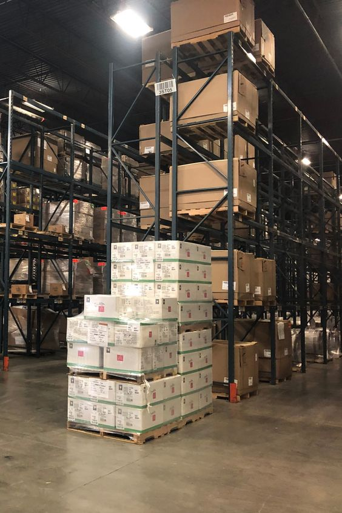

Mumbai Recycling Hub
123 Blossom Street, Vasant Valley, Andheri West, Mumbai,
400053, India
In the heart of Mumbai, a dedicated
recycling center thrives, specializing in the
sustainable transformation of discarded clothes. This
facility employs state-of-the-art technology to sort,
clean, and process textiles, contributing to the city's
environmental well-being. Committed to reducing textile
waste, the center efficiently recycles fabrics, giving
them a new lease on life. By promoting circular fashion,
this Mumbai-based recycling hub exemplifies a crucial
step towards a greener and more eco-conscious
future.

PushPanjali Tailors
123 Harmony Street,
Andheri West,
Mumbai, Maharashtra,
India.
Nestled in Mumbai's bustling
neighborhood, meet Leena, an innovative lady tailor
weaving magic on Harmony Street. Leena crafts exquisite
dresses with a unique touch, utilizing recycled sarees.
Her sustainable approach not only creates stunning
garments but also contributes to reducing textile waste.
Clients flock to her studio, drawn by the allure of
eco-friendly fashion that embodies both style and
conscience. Leena's commitment to repurposing materials
showcases a harmonious blend of creativity and
environmental responsibility, making her a trendsetter
in the world of recycled couture.